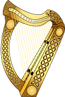
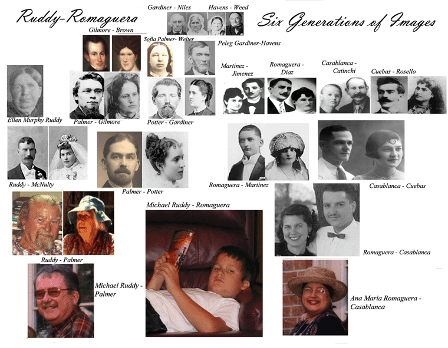
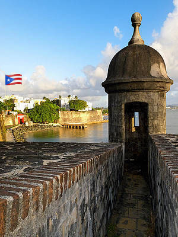
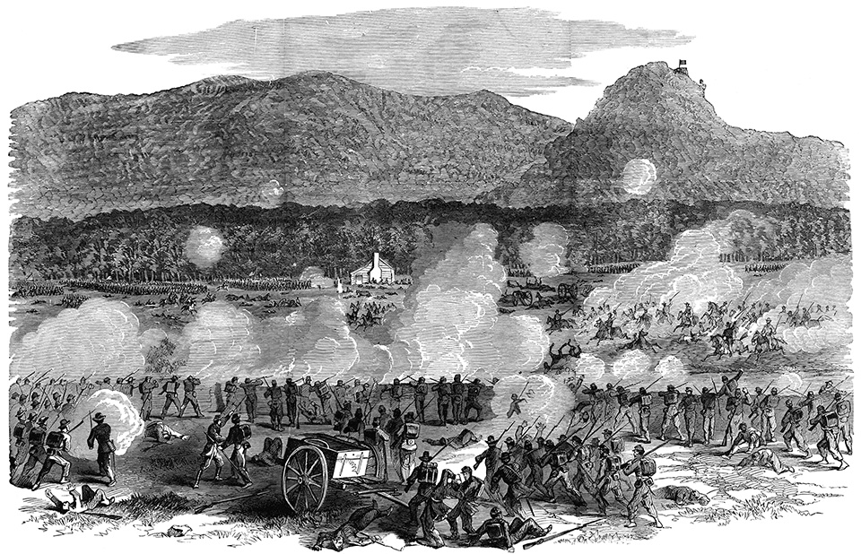
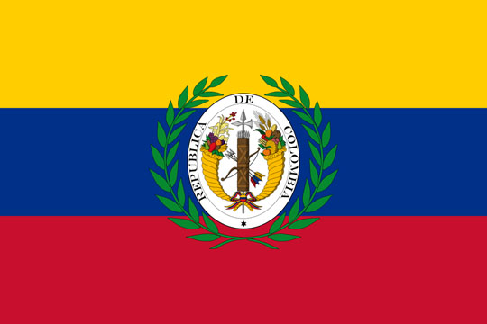
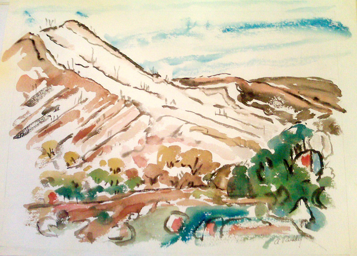
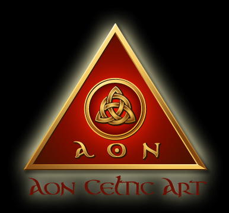

Mike Ruddy
WEBSITE
|  |
 |
 |
~I~
HISTORICAL
INTERESTS
The following two
sections Civil-War Links and Irish Nationalism in
America in the 1800's
originated
in my interest in what three of my relatives were doing in the 1860's:
1. Henry Albert Potter of the 4th
Michigan Volunteer Calvalry
2. Bernard McNulty a Farmer in Wabasha County Minnesota
3. Thomas Ruddy 3rd US Infantry and the 4th Wisconsin Cavlary
*On this website usually the color pink will indicate a link to another webpage

The Battle of
Chickamauga ...Etc.usf.edu
1. Download:"America's Irish Nationalists":
My thesis on the rise of the Clan-na-Gael in America
~II~
1.Murphy ~
Ruddy ~ Garrahy Links
Connected Irish families in Iowa, Illinois, Utah and Minnesota
2. Michael Gerard Ruddy-Romaguera links
3.Searching Romaguera in Catalunya Links
4. McNulty's of Dromore, Ireland to America Links
~III~

Colombia: A Look into the Past
The Photo Album of Ines Camacho Vernaza de Vallejo Links
A trip into the past
through the personal photo album of a member of
an ancient Colombian
family from the Valle de Cauca region of Colombia.
In 1850 Inés' father,
Manuel Dolores Camacho Ulloa, was governor of Cauca.
Inés Camacho Vernaza is the "16th cousin 4x removed" of Michael Gerard Ruddy.
~IV~
A Portait of the Artist

My father Arthur Hugh Ruddy and his paintings Link
Website comments? mpruddy@gmail.com
All Celtic Art above comes from this
lady's delightful website:

Aon-Celtic.com